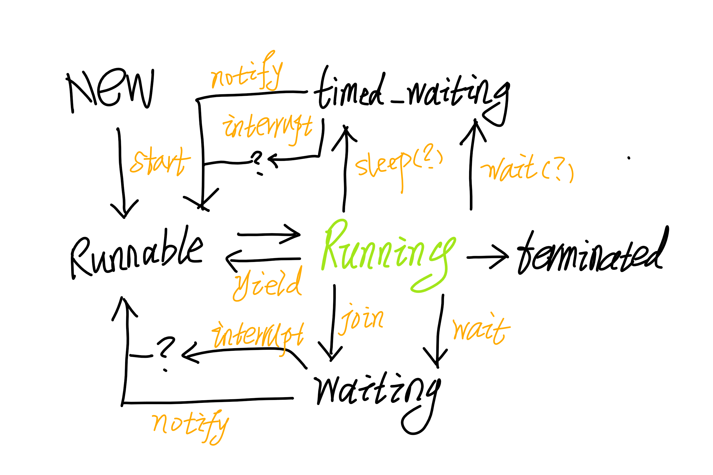

Thread相关接口
- start()
- sleep()
- yield()
- join()
- interrupt()
stop()resume()suspend()
in Object.class
- wait()
- notify()
- notifyAll()
线程状态转换

- 黑色代表线程状态
- 绿色代表不存在状态
- 黄色代表线程支持方法
- 问号代表不确定状态
锁
用于实现多线程并发时同步的数据结构
同步关键字Sychronized
修饰方法或代码块；可面向对象或者类加锁，前者适用于资源竞争互斥的情况，后者适用类中同步内容需要互斥的情况。
- 非公平锁，加入等待队列之前会先进行自旋
自旋锁
一种锁等待的优化
- 一般的锁如果获取不到资源，会被BLOCKED，一直等到有资源再被唤醒，会导致上下文切换的资源浪费。
- 自旋锁则是获取不到资源，会原地定时检查资源情况，一直到获取到资源，避免上下文切换的情况。
- 缺点：当资源一直获取不到，大量自旋锁会消耗CPU进行资源检查。
可重入锁
若当前线程获得了锁，则此线程下所有方法都能获得这个锁。
意味着一个线程中获得了一个锁，即使调用方法下再次请求这个锁，也不会导致BLOCKED。
读写锁
针对读操作与写操作分离的锁，适用于读多写少的情况，可以保证高并发下的吞吐量
- 持有写锁时，所有其他锁的请求都阻塞，置入等待队列
- 持有读锁时，若再请求读锁（没有其他请求等待），可直接再获取读锁
- 持有读锁时，再请求写锁会被阻塞，置入等待队列
公平锁
锁的获取顺序跟请求顺序一致，则为公平锁。
- 每次有锁来抢占锁的时候，会先检查一遍是否等待队列还有请求，如果没有再响应抢占请求。
- 非公平锁的区别在于新获取锁的线程，会有多次非顺序的抢占机会；当加入了等待队列则按照顺序获得锁。
常用锁容器
- 可重入读写锁：ReentrantReadWriteLock
- 线程安全的HashMap：ConcurrentHashMap
- 线程安全的链式队列：ConcurrentLinkedQueue
- 线程安全的跳表Map：ConcurrentSkipListMap
读写分离
一种并发场景的实现方式，一般用于读多写少的情况，常用容器有：
- CopyOnWriteArrayList
- CopyOnWriteArraySet
单例模式
voilent关键字修饰，避免new时的指令重排，导致并发的时候返回一个未初始化完整的对象
|
|